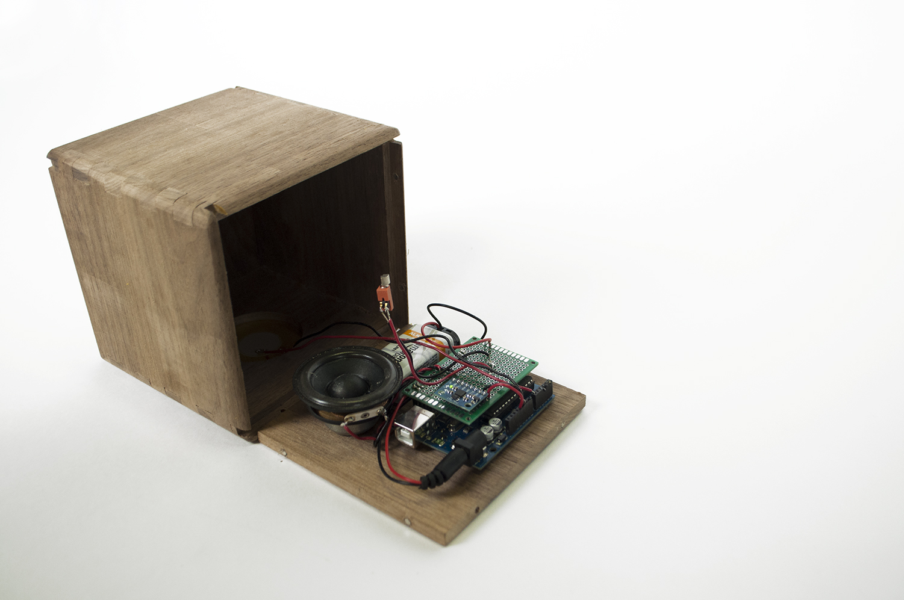
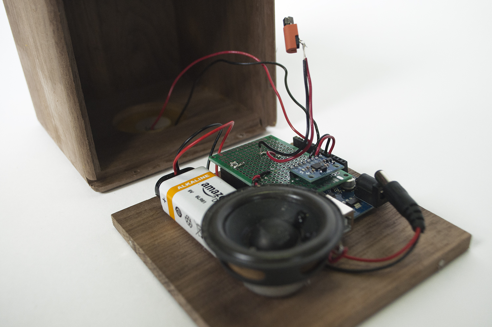

How do we perceive machine? What makes them different from robots? Are we threatened by their existence? Are we ready to co-exist with them? Collaboration, manipulation, or exploitation—between the three, which defines our relationship with robots best? Can our relationship be something outside of that triangle?
Little ball or cube is a "useless" pet-like robot in an enclosed wooden casing, hiding all of its electronic components. I wanted to see people's reactions to this little machine.
Cube's body is made out of wood, an uncommon material choice for robotics casing. All of its components are hidden inside its body with no visible access inside. Cube is equipped with a microcontroller, gyroscopic sensor, micro vibration motor, and mono speaker. When tilted at a right angle, Cube will start "purring".
During my experiments, I handed Cube over to my colleagues in art school with no instruction, little to no context. In most cases, people were perplexed, they turned Cube around to see if there's more to it, and went on a little bit of questioning that often got cut short by Cube's vibration and purring noise, drawing delighted responses from its handler. One of my peers panicked when Cube stopped purring, turning it around in attempt to make it purr again. They explained,"When it stopped purring I was like, oh no, don't stop—I wanted to make it purr again!"
My peers, ranging from sculptors, painters, graphic designers, and many other across disciplines whether related to electronic arts or not, seemed to enjoy Cube's presence and its ability to purr in their hands. Why, though? Is it because of their familiarities with cats—the mimicry of feline purring they found in Cube, signaling us with something we perceive as a sign of contentment, that shifted people's bemusement to delight, even what seemed like genuine care? There are many questions I'd like to pose from this piece alone.
Cube wouldn't fall under what is scientifically nor socially accepted definition of a robot. It's just a wooden box with motor and speaker. One could say that it's too simple, too primitive, to be classified as one. However, to me, the classification of machines and robots are very much like animal taxonomy—we thought we know what is what, but really, nature always surprises us and wracks our manmade system that we force upon them. Between machine and robot, it doesn't really matter what Cube is to me. Besides, I don't think it is our place as humans to define what makes a robot. What I know is tha Cube brings the familiar feelings of curiousity, joy, surprise, a little bit of discomfort and perhaps fear, that industrial grade and social robots do.